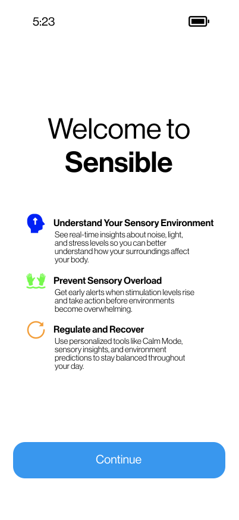
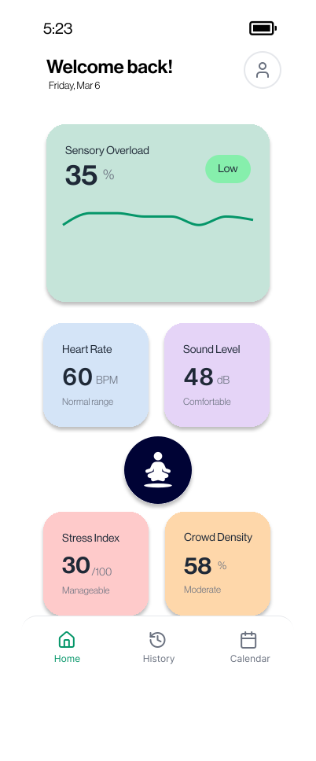
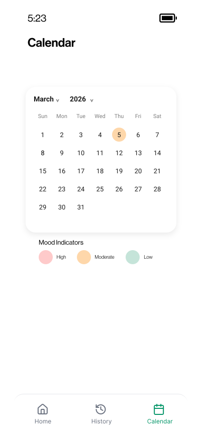

Project Challenges
Designing for an unmeasured experience. Sensory load has no established metric the way heart rate or sleep does. I had to decide how light, sound, crowd density, and heart rate could combine into one Sensory Overload Score that people could understand at a glance.
A four-day timeline as a solo designer. I handled everything from ideation to the final submission myself in four days. That meant prioritizing the key user flows and a polished high-fidelity prototype over covering every possible feature.
Visual Media



Results and Key Outcomes
Designed and delivered a complete, interactive high-fidelity prototype in Figma in four days, from wireframes to key flows.